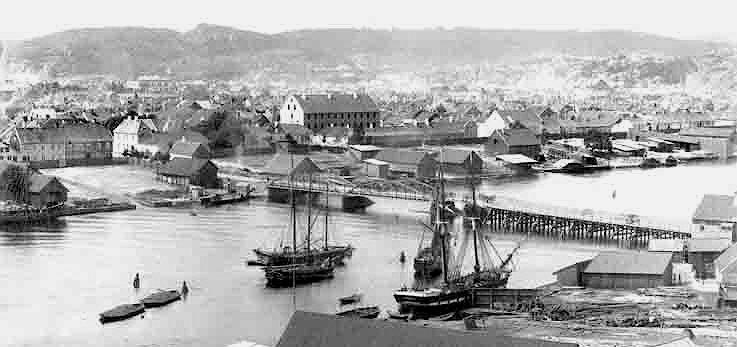
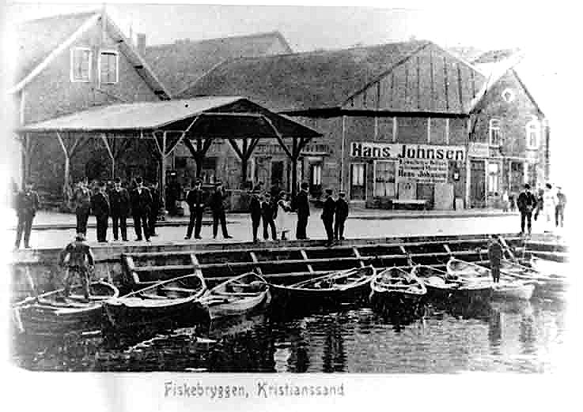
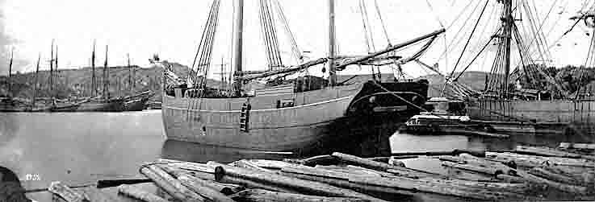
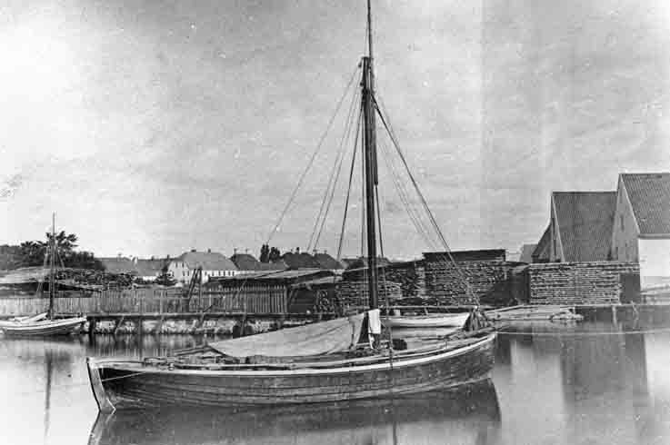
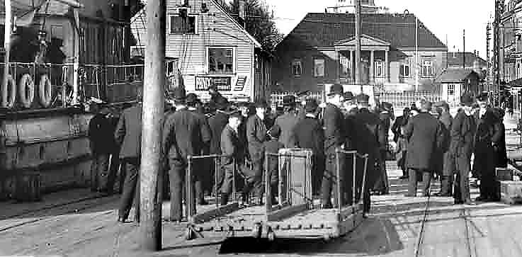
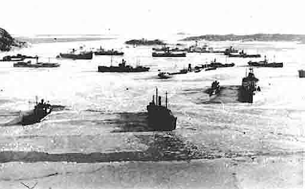

Havnene i Kristiansand
Tekstene er laget i samarbeid med Vest-Agder Fylkesmuseum, og bildene gjengis med museets tillatelse. Alle bilder er fra Vest-Agder Fylkesmuseums fotoarkiv
Foto: Vest-Agder Fylkesmuseums arkiv nr. 5013
Kristiansand sett fra Bellevue etter at kirken var ferdig 1885, og før brannen 1892. I forgrunnen Paviljongen og KMV . Til venstre Grimsbekkens utløp, og begynnelsen på "Gamle Flekkerøvei". I midten til venstre: Opplagsområde for tømmer og skipsfart. Her kom jernbanestasjonsområdet. Vesterveien nederst til venstre.
Foto: Vest-Agder Fylkesmuseums arkiv nr. 5013 utsnitt
Utsnitt av forrige bilde: KMV begynte her i 1850-årene. Midt i bildet: Vedlikeholdsarbeid på seglskute, fra arbeidsflåte. Unionsmerke i flagget. I bakgrunnen "Hampa", der man losset hamp til Reperbanen.
Foto: Vest-Agder Fylkesmuseums arkiv nr. 5190
Vesterhavnen ca 1915. Setesdalsbanens havnespor.
Foto: Vest-Agder Fylkesmuseums arkiv nr. 5190 utsnitt
Utsnitt av forrige bilde: Hånden til lua, i ærbødighet for de de store, som også hilser tilbake. Passasjerer på vei til kystbåten. Ennå reiser man sjøveien.

Foto: Vest-Agder Fylkesmuseums arkiv nr. 5009 utsnitt
Mellom Lagmannsholmen og byen, nedenfor dagens Caledonien hotell. Fiskebrygga utenfor bildet til høyre. Helt til venstre patrisierhus i Vestre Strandgate.
Foto: Vest-Agder Fylkesmuseums arkiv nr. 5009
Lasting og lossing. Og dessuten reparasjonsarbeid og vedlikehold. Det lå flere skipsverft her.
Foto: Vest-Agder Fylkesmuseums arkiv nr. 5027
Kristiansand mellom 1885 og 1892. Midt på bildet går broen "Thygesons Minde" fra byen over til Lahelle. Den sto ferdig i 1810. Den store bygningen er Tugt- og manefakturhuset, senere lærerskolen, som ble bygd i 1807. Opprinnelig pillarbru til høyre. Gjenoppbygd bruspenn til høyre, etter at flomtømmer hadde revet med seg de gamle.
Foto: Vest-Agder Fylkesmuseums arkiv nr. 5027 utsnitt
Seminarbygningen ble revet for å gi plass til yrkesskkolens første byggetrinn. Det lave vinkelbygget mot Elvegata ble brent, som øvingsobjekt for brannvesenet. Bygningen helt til venstre ble eid av industribyggeren Robert Major.
Foto: Vest-Agder Fylkesmuseums arkiv nr. 5027 utsnitt
Utsnitt av seilskip
Foto: Vest-Agder Fylkesmuseums arkiv nr. 5029
Kristiansand sett fra Hamreheia. Brannrøyk over byen, etter brannen i 1892.
Foto: Vest-Agder Fylkesmuseums arkiv nr. 5029 utsnitt
Murene etter de kanonbåt-nausatene. De ble visstnok revet allerede før brannen? Militære branntomter i bakgrunnen. Stiftamtmannen bodde i hjørnehuset som sto på sørsiden av Markensgaten (=Brogaten) og Elvegaten.

Foto: Vest-Agder Fylkesmuseums arkiv nr. 5036
Vesterhavnen sett fra Langmannsholmen mellom 1885 og 1892. Saluttkanoner.
Foto: Vest-Agder Fylkesmuseums arkiv nr. 66
Sett fra Øvre Fergeleie, mo Lahelle. Heisebru, for relativt smale skuter. Høyre del av brua ble senere revet bort av flom-tønner.
Foto: Vest-Agder Fylkesmuseums arkiv nr. 5189
Vesterhavnen 1920 årene, Vestre Strandgate utenfor bildet til høyre. Ekspedisjon for Den Norske Amerikalinje.
Foto: Vest-Agder Fylkesmuseums arkiv nr. 5189 utsnitt
Kanskje skipsreder og grosserer, som tar en en tur på havnen for å ta i øyesyn ankomne varepartier. Havneområdet var byens økonomiske sentrum.
Foto: Vest-Agder Fylkesmuseums arkiv nr. 5191
Ny reklame for den nye tid: Allerede amerikansk/engelsk språk, og olje. Havnen nedenfor Skippergata. Ernst hotell helt til høyre.
Foto: Vest-Agder Fylkesmuseums arkiv nr. 5191 utsnitt
Bygningene i forgrunnen til høyre sto til etter 1960. Reisende nettopp ankommet med rutebåte.
Foto: Vest-Agder Fylkesmuseums arkiv nr. 5191 utsnitt
Foto: Vest-Agder Fylkesmuseums arkiv nr. 5191 utsnitt
Foto: Vest-Agder Fylkesmuseums arkiv nr. 5401
Maleri av Alfredo Andersen: Utsikt mot Lahelle.
Foto: Vest-Agder Fylkesmuseums arkiv nr. 5028
Kristiansand sett fra Lahelle før 1892. Kanskje Lahelle skole til høyre?
Foto: Vest-Agder Fylkesmuseums arkiv nr. 5259
Thygesons Minde, mot Lahelle. Ble revet omkring 1937. I nærmeste hus til venstre for brua bodde familien Solgård, i nærmeste huset til høyre for brua bodde Jørgensen.
Foto: Vest-Agder Fylkesmuseums arkiv nr. 5259 utsnitt
Utsnitt. Bilmodell fra omkring 1930? Det nærmere 300 år gamle mørke huset bak bilen, "Mørkestøls hus", fungerte som Oddernes Tinghus. Til høyre: Trapp opp til Jørgensens hus.
Foto: Vest-Agder Fylkesmuseums arkiv nr. 17-2 (1991)
Kjøita sagbruk øverst til venstre. (Kjøite betyr sumpområde). Små dampbåter har ankringsplass her. De bruktes i rute- eller annen nyttetrafikk til hverdags, og til utflukt om søndagen, oppover elva eller Topdalsfjorden. Eller i den nære skjærgård.
Foto: Vest-Agder Fylkesmuseums arkiv nr. 5367
Tegning: Kanskje Tollboden til venstre.
Foto: Vest-Agder Fylkesmuseums arkiv nr. 5141
Rådhusgaten sett fra Markensgaten, "Bryggebakken". I bakgrunnen til venstre det gamle Rådhuset. Til høyre Børsen. 1860 - 70 årene, Kristiansands Tidende, og Dampbakeriet. Før senere utfylling lå sjøen og båtene ganske nær Strandgaten.
Foto: Vest-Agder Fylkesmuseums arkiv nr. 5131
Tollbodgatens allmenning sett fra Vestre Strandgate omkring 1870 (?). Tollboden til venstre, før siste del ble bygd. Til høyre område for utendørs handel, også salg av fisk fra Flekkerøy-båter.
Foto: Vest-Agder Fylkesmuseums arkiv nr. 5132
Samme havneområde, og omtrent samme årgang. Og snur vi oss -
Foto: Vest-Agder Fylkesmuseums arkiv nr. 5128
- ser vi oppover Tollbodgaten. Vi kjenner til venstre igjen innhukket for de handlende, og deretter kommer kommunehuset. Isaach Isaachsens hus midt i bildet, bygd etter brannen i 1734. Tollboden til høyre. Fra fotografiets barndom: Lang eksponeringstid, så alt som rørte på seg ble uskarpt
Foto: Vest-Agder Fylkesmuseums arkiv nr. 185
Bildet er kanskje fra mellomkrigstiden, og muligens Flekkerøya? Tønner spilte ennå en viktig rolle som emballasje, særlig for sild og annen fisk, men også til f.eks. vin og brennevin. Dermed ble også tønnemakerne, bøkkerne, en viktig håndverksgruppe, kalt kippere i Holland, og coopers i England.
Foto: Vest-Agder Fylkesmuseums arkiv nr. 50
Skålevik (?), Flekkerøya.
Foto: Vest-Agder Fylkesmuseums arkiv nr. 663
Høllen båtbyggeri.
Foto: Vest-Agder Fylkesmuseums arkiv nr. 663 utsnitt
Utsnitt av forrige bilde, med nærbilde av arbeid på rorstammen. Alt ble hogd for hånd.
Foto: Vest-Agder Fylkesmuseums arkiv nr. 687 utsnitt
Slutten av 1800-tallet, med overgang fra segl til damp. Men det kan også være seinere, for Kristiansand holdt lenge på seglskutene, helt opp i 1920-årene for de siste.

Foto: Vest-Agder Fylkesmuseums arkiv nr. 1045
Foto: Vest-Agder Fylkesmuseums arkiv nr. 5105
Sett fra Lagmannsholmen. Lasarettbygningene til venstre, og seglmaker Larsesns hvite hus ved sjøen til høgre. Familieforretningen flyttet senere til Gravane-siden.
Foto: Vest-Agder Fylkesmuseums arkiv nr. 112
Blåkorskafeen, ved enden av Rådhusgata.
Foto: Vest-Agder Fylkesmuseums arkiv nr. 325
Nedenfor Rådhusgaten. Hit kom fiskerne og solgte sin fisk fra båten.
Foto: Vest-Agder Fylkesmuseums arkiv nr. 5227
Usteruds dampsag på den senere "Marinetomta" i Østerhavnen, før 1892.
Foto: Vest-Agder Fylkesmuseums arkiv nr. 5082
Nodeviga og Lasaretthøyden sett fra Hartmanns brygge, ca 1900. Fraktepram av en vanlig type. Ble gjerne slept av små dampbåter. I småbåter begynte det å komme motor like etter 1900.
Foto: Vest-Agder Fylkesmuseums arkiv nr. 5082 utsnitt
Utsnitt av forrige bilde.
Foto: Vest-Agder Fylkesmuseums arkiv nr. 5254
Sett fra havna, Kristian IVs gate midt i bildet. I forgrunnen det som ble jernbanetomta. Øverst til høyre Karl Johan Minne skole, nå Domus. Hvitt hus til venstre, Vestre Strandgate 44 står nå på Fylkesmuseet.
Foto: Vest-Agder Fylkesmuseums arkiv nr. 6
Garveriet på Kongsgård.
Foto: Vest-Agder Fylkesmuseums arkiv nr. 270 (1988)
Etter brannen i 1892. Nybygd Ernst hotell helt til høyre. Nytt spisst brandvakt-tårn til høyre for domkirken, og Dambakeriets høye pipe foran til høyre. I. O. Gundersens store forretningsgård som største bygning til venstre i Strandgaten. Det fikk stå helt til 1960-årene. Midt i bildet: Ekbergs hus, som ennå står.
Foto: Vest-Agder Fylkesmuseums arkiv nr. 5012
Fra 1881, med nedbrent domkirke. Kjølhaling ved verft i Vesterhavnen. Det gamle firkantede brannvakttårnet skimtes midt i bildet.
Foto: Vest-Agder Fylkesmuseums arkiv nr. 5016
Utsikt fra Vesterveien over KMV-området.
Foto: Vest-Agder Fylkesmuseums arkiv nr. 685
Kanskje fra Odderøya, med Sjølyst badehus til venstre, og Fiskåtangen i bakgrunnen?
Foto: Vest-Agder Fylkesmuseums arkiv nr. 110
Foto: Vest-Agder Fylkesmuseums arkiv nr. 693
Til høyre den gamle domkirken
Foto: Vest-Agder Fylkesmuseums arkiv nr. 693
Tollboden til venstre, bygd i 1826.
Foto: Vest-Agder Fylkesmuseums arkiv nr. 686
Foto: Vest-Agder Fylkesmuseums arkiv nr. 184
Kristiansandsskute i fremmed havn.
Foto: Vest-Agder Fylkesmuseums arkiv nr. 688
Foto: Vest-Agder Fylkesmuseums arkiv nr. 5115
Foto: Vest-Agder Fylkesmuseums arkiv nr. 690
Kanskje "Desideria", brukt som troppeskip og øvingsfartøy for de militære i Kristiansand i 1890-årene.
Foto: Vest-Agder Fylkesmuseums arkiv nr. 6-2
Foto: Vest-Agder Fylkesmuseums arkiv nr. 689
Gravane, med gamle tollboden til høyre. Fiskeskøyte, eller fanteskøyte?
Foto: Vest-Agder Fylkesmuseums arkiv nr. 5061
Foto: Vest-Agder Fylkesmuseums arkiv nr. 5329
Foto: Vest-Agder Fylkesmuseums arkiv nr. 5059
Foto: Vest-Agder Fylkesmuseums arkiv nr. 5057
Vesterhavnen før 1892. Caledonienområdet midt i bildet.
Foto: Vest-Agder Fylkesmuseums arkiv nr. 5118
Vesterhavnen sett fra Lagmannsholmen etter 1892
Foto: Vest-Agder Fylkesmuseums arkiv nr. 1063
Foto: Vest-Agder Fylkesmuseums arkiv nr. 5031
Kristiansand sett fra Lagmannsholmen før 1880. Kjølhaling til venstre.
Foto: Vest-Agder Fylkesmuseums arkiv nr. 5035
Vesterhavnen sett fra Lagmannsholmen mellom 1885 og 1892. I forgrunnen skilderhus og til høyre vakthus, Corps de garde, på Langmannsholmen.
Foto: Vest-Agder Fylkesmuseums arkiv nr. 5108
Sett fra Lagmannsholmen mot Odderøya med Lasaretthøyden. Lun havn, i tidligere tider også orlogshavn.
Foto: Vest-Agder Fylkesmuseums arkiv nr. 5066
I forgrunnen KMV
Foto: Vest-Agder Fylkesmuseums arkiv nr. 168-2
"Prisonen", fangeskip i England.
Foto: Vest-Agder Fylkesmuseums arkiv nr. 5226
Have nedenfor Østre Strandgate mot Østerhavnen, mellom Holbergs- og Dronningensgate, antagelig Vilhelm Krags barndoms-have. I bakgrunnen til høyre Odderøya. Før 1892.
Foto: Vest-Agder Fylkesmuseums arkiv nr. 5020
Kristiansand sett fra Odderøya mot Nodeviga og Gravane. Til høyre i forgrunnen den gamle tollboden til og "Porto Franco" (en slags frihavn?). Fotografi før 1880.
Foto: Vest-Agder Fylkesmuseums arkiv nr. 5020 utsnitt
Bestefar til Henrik Wergeland, Henrik Arnold Thaulow bodde i huset midt i øverste høyre hjørne. I 1811 ble det ombygd til to etasjer.
Foto: Vest-Agder Fylkesmuseums arkiv nr. 5058
Lagmannsholmen med Vaktstuen foran. Krutthuset bak står ennå. Kanoner til høyre. Helt til venstre: Seglmaker Larsens hus.
Foto: Vest-Agder Fylkesmuseums arkiv nr. 5022
Tollboden til høyre.
Foto: Vest-Agder Fylkesmuseums arkiv nr. 5168
Paviljong i Reinhards have. I bakgrunnen Lagmannsholmen. Før 1892 og Reinhards verft. Lagmannsholmen i bakgrunneen.
Foto: Vest-Agder Fylkesmuseums arkiv nr. 5211
Retranchementet en 17de mai 1892 eller før. Det hvite huset i midten ble kalt "Det hollandske hus": Omkring 1830 bodde hollenderen Johan Henrik van Kervel her. Han giftet seg med datter til Daniel Isachssen.
Foto: Vest-Agder Fylkesmuseums arkiv nr. 5294
Foto: Vest-Agder Fylkesmuseums arkiv nr. 5294 utsnitt

Foto: Vest-Agder Fylkesmuseums arkiv nr. 95-40
Opplagsplassene ved KMV.
Foto: Vest-Agder Fylkesmuseums arkiv nr. 151-2
Østre Strandgate mellom Markens og Kirkegaten. Familien Henriksen med alle døtrene. Hele husrekken brant i 1892. Ingen bygninger på sjøsiden, bare hager.
Foto: Vest-Agder Fylkesmuseums arkiv nr. 154
Børshagen. Ernst hotell til venstre, så Hans Johnsen, og Blåkorskafeen i de lave bygningene til høyre.
Foto: Vest-Agder Fylkesmuseums arkiv nr. 47
Børshagen, vi ser mot sjøen.
Foto: Vest-Agder Fylkesmuseums arkiv nr. 5168
Paviljong i Reinhards have.
Foto: Vest-Agder Fylkesmuseums arkiv nr. 276
Hagene på sjøsiden av Østre Strandgate, før 1892. Festningen bak til høyre, uten tak. Lysthus i dragestil. Marinefartøyet "Desideria" for anker utpå.
Foto: Vest-Agder Fylkesmuseums arkiv nr. 276 utsnitt
Utsnitt.
Foto: Vest-Agder Fylkesmuseums arkiv nr. 327
Gravane, med den gamle brua. Sjølyst badehus like utenfor høyre bildekant.
Foto: Vest-Agder Fylkesmuseums arkiv nr. 60
Musikkpaviljong i Gravane. Lasaretthøyden bak.
Foto: Vest-Agder Fylkesmuseums arkiv nr. 5416
Fra torget. Fontenen (under trekronen) ble flyttet i 1908 og erstattet av Wergelandstatuen. Til høyre torghandlere.
Foto: Vest-Agder Fylkesmuseums arkiv nr. 5416 utsnitt
Utsnitt fra forrige bilde.
Foto: Vest-Agder Fylkesmuseums arkiv nr. 31
Foto: Vest-Agder Fylkesmuseums arkiv nr. 395
Fra Gravane sett fra Nodeviga, før 1892.
Foto: Vest-Agder Fylkesmuseums arkiv nr. 37
Tollbodgaten midt i bildet.
Foto: Vest-Agder Fylkesmuseums arkiv nr. 297
Pider Ro med sin hund Ludafisken".
Foto: Vest-Agder Fylkesmuseums arkiv nr. 5134
"Klemmemannen", som livberget seg ved å gå omkring og selge klesklyper.
Foto: Vest-Agder Fylkesmuseums arkiv nr. 5134
Han hadde klumpfot, og det var ikke uføretrygd den gang.
Foto: Vest-Agder Fylkesmuseums arkiv nr. 5103
Lagmannsholmen sett fra Odderøya. 1870-årene?
Foto: Vest-Agder Fylkesmuseums arkiv nr. 129-2
Tollbodkaien.
Foto: Vest-Agder Fylkesmuseums arkiv nr. 5021
Kristiansand sett fra Odderøya. I forgrunnen Nodeviga og vestre del av Østerhavnen. Bak sjøhusene løper Østre Strandgates fasader. I bakgrunnen Tordenskjoldsgate skole. Fotografi før 1880. Baneheia i bakgrunnen uten trær.
Foto: Vest-Agder Fylkesmuseums arkiv nr. 157-2
Byens sentrale havn, med Setesdalsbanens fraktvogner i bakgrunnen. Setedalsbanen var fullført omkring 1896. Men trafikk øst- og vestover gikk ennå lenge mest sjøveien. Togforbindelse til Oslo kom først i 1938.
Foto: Vest-Agder Fylkesmuseums arkiv nr. 157-2 utsnitt
Utsnitt.
Foto: Vest-Agder Fylkesmuseums arkiv nr. 398
Samme havneområde.
Foto: Vest-Agder Fylkesmuseums arkiv nr. 399
Kongebesøket i 1906
Foto: Vest-Agder Fylkesmuseums arkiv nr. 119
Søndagsutflukt, kanskje forening eller sangkor, med koner og barn.
Foto: Vest-Agder Fylkesmuseums arkiv nr. 401
Foto: Vest-Agder Fylkesmuseums arkiv nr. 402
Foto: Vest-Agder Fylkesmuseums arkiv nr. 3-5 (1991)
Foto: Vest-Agder Fylkesmuseums arkiv nr. 5
Foto: Vest-Agder Fylkesmuseums arkiv nr. 32
Flåtebesøk?
Foto: Vest-Agder Fylkesmuseums arkiv nr. 408
Isvinter